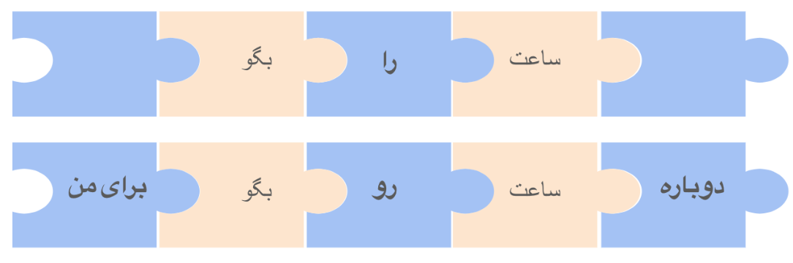

در نوشته قبلی در مورد مدلهای زبانی بزرگ و چگونگی کارکرد آنها صحبت مختصری کردیم. توجه اصلی در آنجا به خود مدل بود و اشاره کوچکی هم به بحث جهتدهی داشتیم. در اینجا به بررسی بیشتر روشهای جهتدهی میپردازیم. طبق نظر بسیاری متخصصین هوش مصنوعی، برتری ChatGPT به مدلهای زبانی همزمان خود بیش از هر چیز بابت جهتدهی بهتر آن بوده. در غیر اینصورت تمامی مدلهای مشابه و پیشرفته زبانی موجود ساختار و دادگان بسیار مشابهی داشتند. در اینجا ابتدا اندکی بیشتر وارد جزئیات روشهای رایج برای جهتدهی به مدلهای زبانی میشویم و دلیل برتری نهایی ChatGPT را بررسی میکنیم.
همانطور که در بحث قبلی مطرح شد، یکی از روشهای مورد استفاده در مدلهای زبانی قدیمیتر، بررسی دقیق ساختار زبان و یافتن روابط منطقی بین اجزای جملات برای پیدا کردن جواب مناسب بر مبنای آنهاست. چنین روشی نیازمند شناخت دقیق از قواعد زبان مورد بحث بوده و در عمل بسیار پیچیده و زمانبر میباشد. از سوی دیگر در جایی که هدف نهایی ساختن یک برنامه ساده، مثل یک دستیار هوش مصنوعی با قابلیتهای محدود، باشد استفاده از این روش میتواند بسیار سریع و کارآمد باشد. تواناییهای دستیارهای زبانی مانند Alexa و Siri به میزان زیادی با این روش طراحی شدهاند.
به بیانی خیلی ساده، چنین تواناییهایی معمولا بر اساس تطبیق دادن ورودی ها یا درخواستهای کاربران با الگوهایی از پیش طراحی شده است. برای کمک به درک بهتر این موضوع بیایید فرض کنیم که شما در حال طراحی دستیاری مانند Alexa و Siri هستید. در آغاز میخواهیم توانایی جواب دادن به درخواستهایی مثل "ساعت را بگو."، "دوباره ساعت رو بگو برای من." و مشابه اینها را برای این برنامه طراحی کنیم. با نگاهی دقیقتر به این جملات و با در نظر گرفتن ساختار جملات در زبان فارسی، میتوان الگو مربوط به این درخواستها را به راحتی پیدا کرد. شکل زیر الگو سادهای برای دومثال قبلی است:
در این الگو جملاتی شبیه مثالهای بالا را به پنج بخش تقسیم کردهایم. قطعات زرد رنگ بخشهایی از جملات هستند که باید دقیقا تطبیق داده شوند. گاهی به آنها کلیدواژه های مهارت میگوییم. قطعات آبی رنگ میتوانند سایر کلمات باشند یا جای خالی. مثلا دو مثال بالا اینگونه در الگو ما تطبیق داده میشوند:
برنامه دستیار هوش مصنوعی ما جملاتی که با این الگو تطبیق داده شوند را تشخیص داده و سپس جواب های مرتبط را تولید خواهد کرد. به همین سادگی ما مهارت جواب دادن به ساعت پرسیدن را به دستیار هوش مصنوعی خود اضافه کردیم. مشابه همین الگو را میتوان برای مهارتهای دیگری مثل پرسش درباره وضع هوا، برنامه حرکت قطارها و یا حتی سفارش پیتزا به این دستیار هوش مصنوعی اضافه کرد. برنامه هوش مصنوعی ما درخواستهای ورودی را با تک تک این الگوها امتحان کرده و در صورت تطبیق الگو برنامه مرتبط با آن را اجرا میکند تا جواب مناسب را تولید کند. به راحتی میتوان دید که این روش به مرور زمان و با افزودن مهارتهای بیشتر پیچیده و حجیم خواهد شد. گذشته از آن، با توجه به پیچیدگیهای زبانی درست کردن الگویی که توانایی تطابق با روشهای مختلف بیان یک مفهوم را داشته باشد، پیچیدگی به مراتب بیشتر خواهد شد. به عنوان مثال یک بار دیگر به مهارت پاسخ دادن به پرسیدن زمان که در بالا به آن پرداختیم برگردیم: الگویی که در بالا پیدا کردیم دو جملهای که اول به آنها اشاره کردیم را پوشش میدهد. ولی اگر کسی پرسید "ساعت چنده؟" چطور؟
لازم است اشاره کنیم که در عمل الگوهای طراحی شده برای این مدل از دستیارهای هوش مصنوعی از سازوکارهای منطقی به مراتب پیچیدهتر از چیزی که در الگوی بالا نشان دادیم پیروی میکنند. مثلا به جای یک قاعده ساده که ما با تصویر بالا نشان دادیم، چند مرحله تصمیم گیری با توجه به بخشهای مختلف را دارند. همچنین با توجه به ساختار زبان و شناسایی فعل و فاعل و سایر بخشهای دستوری جمله درک بهتری از ارتباط معنایی کلیدواژههای هر مهارت دارند. با این حال مثالهای بالا شمایی کلی از مشکل پیش رو را تصویر میکنند.
با وجود تمامی این پیچیدگیها، دستیارهای هوش مصنوعی که با این قوانین طراحی شدهاند همچنان ممکن است به راحتی نتوانند تمامی روشهای ممکن برای پاسخگویی به درخواستها را پوشش دهند. از سوی دیگر نیاز به متخصصینی که تکتک درخواستهایی که امکان دارد از این دستیارها پرسیده شود را بررسی کرده و الگوهای آنها را استخراج کرده باشند در عمل ناممکن است. به همین دلیل به محض پرسیدن سؤالهایی با اندکی پیچیدگی از Siri یا Alexa با جوابهایی از پیش طراحی شده مواجه میشویم که به ما میگوید هیچ پاسخی برای سوال ما ندارند. این اتفاق معمولا زمانی میافتد که درخواست ما با هیچ یک از الگوهای از پیش طراحی شده در برنامه آنها تطابق داده نشود. حال یا به خاطر اینکه مهارت موجود به آنها اضافه نشده و یا اینکه طرز بیان ما به درستی با الگوهای موجود تطابق ندارد.